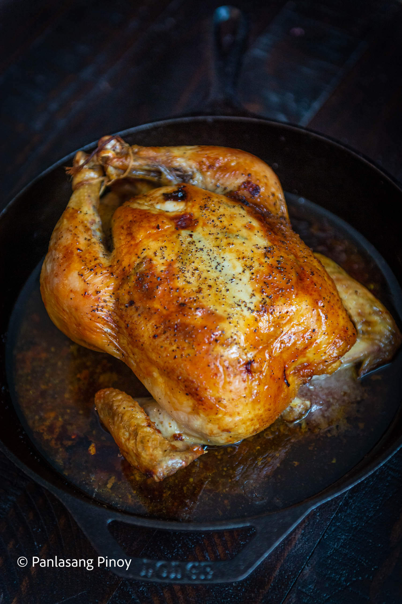
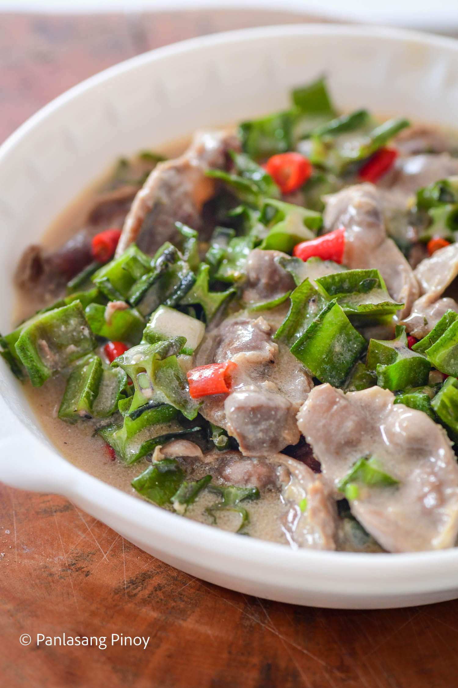
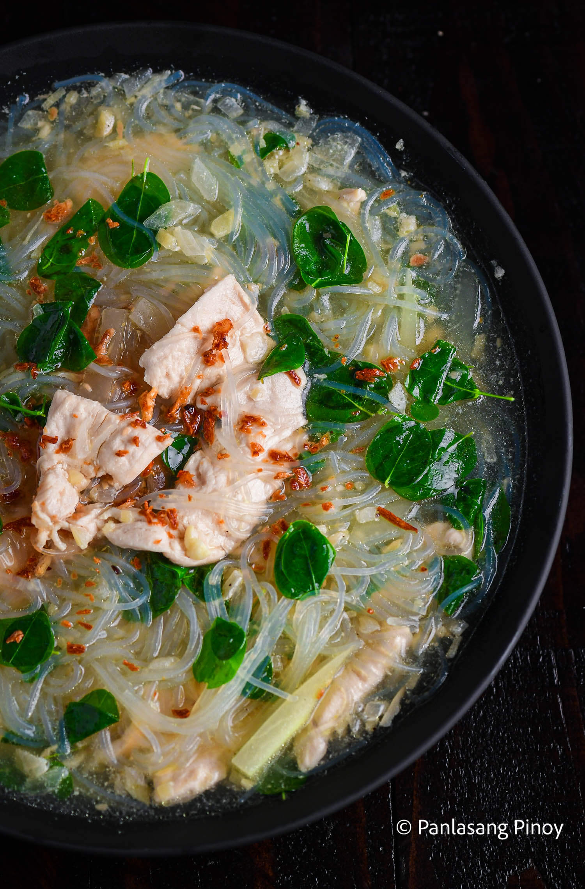

With insanely crispy skin that gives way to meat tender like no other, rarely can anyone resist the charms of fried chicken. The only thing that could possibly make fried chicken better is making it so compact you could easily pop one in your mouth.

GARLIC ROAST CHICKEN
The main ingredient that lends its strong flavors to this garlic roast chicken is, undoubtedly, the garlic itself! One of the most popular and frequently used spices on the planet, garlic’s incredibly versatile uses make its repertoire of dishes quite a wide one.
SINARSAHANG MANOK
Without a doubt, we, Filipinos, love our sauces and stews with a tomato base. From the occasional Menudo to Afritada, dishes featuring the lycopene-rich fruit (although often mistaken for a vegetable) probably count as our bread and butter.
KETCHUP FRIED CHICKEN
With an enticingly sweet glaze and flavorful meat, this ketchup fried chicken is definitely a favorite. You get to enjoy the classic flavors of chicken that you love, while also getting to try something new in the process.
PERFECT CHICKEN ADOBO
Easy and all set in less than half an hour (if you don’t count the time for marinating), chicken adobo is a no-fuss, no-frills, but always guaranteed meal to enjoy.
CHICKEN GISING-GISING
Gising-gising is a delightful Filipino dish that makes use of chili peppers, winged beans, and the flavor of coconut milk.

CHICKEN GIZZARD BICOL EXPRESS
A wonderfully simple but satisfying balance of sweet and spicy awaits you in any Bicol Express recipe. This dish is one of many Bicolanos favorites that utilize the rich and tasty coconut milk.

CHICKEN SOTANGHON TINOLA
With insanely crispy skin that gives way to meat tender like no other, rarely can anyone resist the charms of fried chicken. The only thing that could possibly make fried chicken better is making it so compact you could easily pop one in your mouth.
ORIGINAL BUFFALO CHICKEN WINGS
Tangy, rich, and sometimes even spicy, buffalo chicken wings are the epitome of flavor. These chicken wings are flavorful both inside and out, with a bright appearance that immediately catches your eye.
KFC STYLE POPCORN CHICKEN
With insanely crispy skin that gives way to meat tender like no other, rarely can anyone resist the charms of fried chicken.